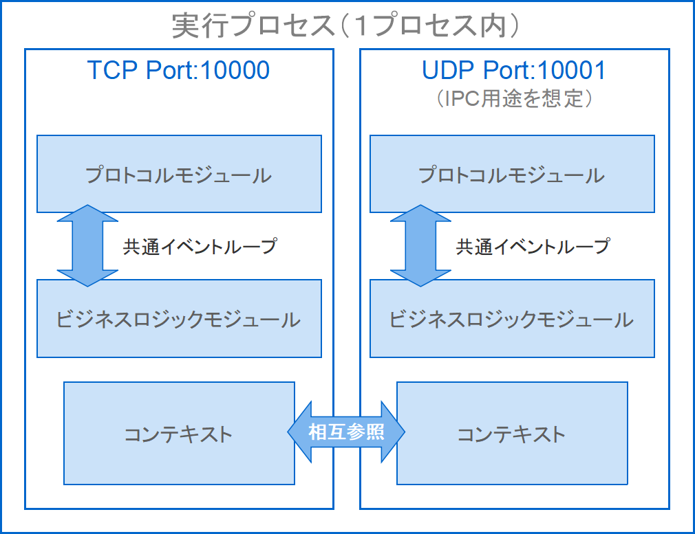

【フレームワークのご紹介】
はじめに
SOCKET-MANAGER Framework（ソケットマネージャーフレームワーク）は、プロトコルに依存しない柔軟なネットワーク基盤と、コマンドベースでのプロジェクト構築機能を統合した、通信アプリケーション開発のためのオールインワン環境です。
TCP・UDP・WebSocket・独自プロトコルなどの通信方式を統一されたアーキテクチャで取り扱えるほか、Laravelとの連携を通じてWebアプリケーションとの融合的な運用も可能です。
このページでは、フレームワークの構成と主要機能をご紹介します。
TCP・UDP・WebSocket・独自プロトコルなどの通信方式を統一されたアーキテクチャで取り扱えるほか、Laravelとの連携を通じてWebアプリケーションとの融合的な運用も可能です。
このページでは、フレームワークの構成と主要機能をご紹介します。
メニュー構成
ここではサーバー開発を行う際に必要な情報を、左メニューのカテゴリに分けてご紹介しています。
以下はそのメニューカテゴリの説明です。
また、以下のサブカテゴリもございます。
以下はそのメニューカテゴリの説明です。
MAIN-MENU
このフレームワークの概要や事前知識も含め、実装に必要な情報を公開しています。また、以下のサブカテゴリもございます。
- ・IMPLEMENT
-
実装のメインとなるコマンドを使ったコーディング方法を各コマンドごとにご紹介しています。
- ・ADVANCED
-
マルチサーバーの構築方法やLaravelとの連携方法など、より高度な使い方をご紹介しています。
- ・OTHER-PROJECT
-
実装を始める時に利用可能なデモ版を除くプロジェクト環境をご紹介しています。
EXTRA-MENU
デモ版の追加情報やWebsocketプロトコルの切断フレームに関する情報など実装には直接関係しない補足的な情報を掲載しています。PHP-TECHNIQUE
このフレームワークに関する技術情報を提供しています。主要機能一覧
当フレームワークが提供する主要な機能と特徴について一覧で示します。これらの機能により、高度なスケーラビリティと柔軟な実装が可能となります。
| 項目 | 内容 |
|---|---|
| 実装形態 | コマンドベースのスキャフォールディング（標準実装／デベロッパーによる追加構築不要） |
| 非同期モデル | 独自仕様のイベントループ / コルーチン対応（ステータス維持したまま処理を中断可能） |
| 通信方式 | TCP / UDP / WebSocket / 独自プロトコル対応 |
| IPC形態 | INETソケットを利用し、異なるプロトコルの共存が可能 |
| スケールアップ | プロセス単位で可能（ポート変更による動的調整） |
| スケールアウト | プロセス単位で可能（複数サーバー間で負荷分散） |
| プラットフォーム | Windows / Linux（Ubuntuによる動作確認） |
🧭 その他の特長
- 依存性の排除：外部サービスやサードパーティ製ライブラリに依存せず、単独で動作可能
- 独自イベントループ／コルーチン：プロセスやスレッドに頼らず通信制御を実現
- 設定の柔軟性：設定ファイルや翻訳リソースの柔軟な切り替えと管理
- 軽量な導入：PHP（v8.1.0以降）とsocketsモジュールのみで動作する、シンプルなセットアップ
他構成と特徴の違い
| 項目 | 一般的な構成例 | 本フレームワークの特長 |
|---|---|---|
| プロトコル処理 | 通信処理とアプリロジックが一体化して実装されることが多い | 抽象インターフェースにより、TCP／UDP／WebSocketなどを自由に切り替え可能 |
| ビジネスロジックの構造 | 通信処理に強く依存しており、移植・再利用が難しい | プロトコル層とは別クラスとしてモジュール化、処理単位で入れ替え可能 |
| 非同期制御 | スレッド／プロセス中心の並行処理設計 | 独自イベントループ／コルーチンにより、スレッドレスかつ軽量に状態管理 |
| 複数構成の共存 | 1アプリで1構成が基本。複数構成は別プロセスが前提 | プロトコル／ロジックを組み合わせた多数インスタンスを同一プロセス内で待機・共存 |
| 開発インターフェース | 構成ごとに設計思想・処理分離が異なる場合が多い | プロトコル／ビジネスロジックともに共通の開発インターフェースで構築可能 |
| 初期構築の手間 | 雛形作成や構成設計に工数がかかりがち | 専用スキャフォールディングにより、必要構成を即時生成可能 |
📘 構成イメージ
以下は、1プロセス内で複数のプロトコル（例：TCP／UDP）と異なるビジネスロジックを共存させた代表的な構成例です。いずれも共通のイベントループ上で動作しており、高い柔軟性と一貫性を両立する設計になっています。また、コンテキストを通して相手のリソースを操作したり、送受信メソッドを使って任意のデータを相手側のクライアントへ直接送信したり、受信データを設定させる事もできます。
フレームワークとしての特徴
サーバーアプリを開発するツールと言えば一般にライブラリ形式で提供されているものが多い印象ですが、このフレームワークでは頻繁に書くような慣習的なコーディング部分をコマンド操作で概ね補えるようになっています。
以下のようにフレームワークコマンドのUsageを表示すると、サーバーの実装に必要なコマンド群がそれぞれ main、craft カテゴリに分けて表示されます。
例えば、メイン処理を作成してインスタンス化し、サーバーを起動するまでの手順は以下２ステップのコマンドで完結します。
今回の場合は
生成されたクラスは
（サーバー名はキャメルケースをスネークケースに変換して先頭に
今回の場合はポート番号10000番で起動。
これでホスト名'localhost'（デフォルト）の10000ポートをListenポートとしてサーバーが起動します。（
また、
コマンドベースのインターフェースはLaravelとの連携を考慮しているので、▶Laravelと連携するのページでその連携方法をご紹介しています。
連携後はLaravelのコマンドを使ってサーバーを起動する事もできるので、Laravelのリソースを使った開発が可能になる事に加え、Webアプリとのオールインワン環境としても使えるようになります。
また、Laravelとの連携後であっても当フレームワークのコマンドを使って引き続きサーバー開発が行えます。
以降では、デモ環境のご紹介とプロジェクト環境のインストール方法をご紹介していますので、開発を始める前にまずはそちらをご覧ください。
以下のようにフレームワークコマンドのUsageを表示すると、サーバーの実装に必要なコマンド群がそれぞれ main、craft カテゴリに分けて表示されます。
> php worker
SOCKET-MANAGER Framework 1.0.0
Usage:
command [arguments]
main
Empty...
craft
craft:init <初期化クラス名> 初期化クラスの生成
craft:parameter <UNITパラメータクラス名> UNITパラメータクラスの生成
craft:protocol <プロトコルUNIT定義のクラス名> プロトコルUNIT定義のクラスとステータス名Enumの生成
craft:command <コマンドUNIT定義のクラス名> コマンドUNIT定義のクラスとキュー／ステータス名Enumの生成
craft:main <メイン処理のクラス名> メイン処理クラスの生成
craft:setting <設定ファイル名> 設定ファイルの生成
craft:locale <メッセージファイル名> メッセージファイルの生成
例えば、メイン処理を作成してインスタンス化し、サーバーを起動するまでの手順は以下２ステップのコマンドで完結します。
①メイン処理の作成
php worker craft:main <メイン処理クラス名>というコマンドを使ってメイン処理クラスのひな形を作成します。今回の場合は
MainForTestというクラス名を指定。
> php worker craft:main MainForTest
[success] メイン処理クラスの生成に成功しました (MainForTest)
生成されたクラスは
app/MainClassの場所に格納されます。②サーバーを起動
php workerコマンドを使ってapp:main-for-testというサーバー名を指定して起動。（サーバー名はキャメルケースをスネークケースに変換して先頭に
app:を付与したものになります）今回の場合はポート番号10000番で起動。
> php worker app:main-for-test 10000
これでホスト名'localhost'（デフォルト）の10000ポートをListenポートとしてサーバーが起動します。（
Ctrl+Cで停止します）また、
php workerを実行して再度Usageを表示すると、先ほど生成したサーバーの名前がmainカテゴリへ追加されているのが確認できます。
> php worker
SOCKET-MANAGER Framework 1.0.0
Usage:
command [arguments]
main
app:main-for-test Command description
craft
craft:init <初期化クラス名> 初期化クラスの生成
craft:parameter <UNITパラメータクラス名> UNITパラメータクラスの生成
craft:protocol <プロトコルUNIT定義のクラス名> プロトコルUNIT定義のクラスとステータス名Enumの生成
craft:command <コマンドUNIT定義のクラス名> コマンドUNIT定義のクラスとキュー／ステータス名Enumの生成
craft:main <メイン処理のクラス名> メイン処理クラスの生成
craft:setting <設定ファイル名> 設定ファイルの生成
craft:locale <メッセージファイル名> メッセージファイルの生成
コマンドベースのインターフェースはLaravelとの連携を考慮しているので、▶Laravelと連携するのページでその連携方法をご紹介しています。
連携後はLaravelのコマンドを使ってサーバーを起動する事もできるので、Laravelのリソースを使った開発が可能になる事に加え、Webアプリとのオールインワン環境としても使えるようになります。
また、Laravelとの連携後であっても当フレームワークのコマンドを使って引き続きサーバー開発が行えます。
以降では、デモ環境のご紹介とプロジェクト環境のインストール方法をご紹介していますので、開発を始める前にまずはそちらをご覧ください。
デモ画面

これはWebsocketサーバーを使ってマインクラフトとブラウザ間でチャットを行っている様子です。
通常のコメント発信とプライベート送信（マインクラフト側はウィスパー機能で実装）に対応しています。
一部例外はありますが、マインクラフトやほとんどのWebブラウザにはWebsocket通信の機能が実装されていますので、Websocketサーバーを通じてこのデモのようにWebブラウザ⇔マインクラフト間で通信を行う事が可能です。
（ブラウザのWebsocket機能はそのまま使えますので別途モジュールを適用する必要はありません）
以降ではデモサーバーのインストールとブラウザやマインクラフトからのアクセス方法をご紹介しています。
通常のコメント発信とプライベート送信（マインクラフト側はウィスパー機能で実装）に対応しています。
一部例外はありますが、マインクラフトやほとんどのWebブラウザにはWebsocket通信の機能が実装されていますので、Websocketサーバーを通じてこのデモのようにWebブラウザ⇔マインクラフト間で通信を行う事が可能です。
（ブラウザのWebsocket機能はそのまま使えますので別途モジュールを適用する必要はありません）
以降ではデモサーバーのインストールとブラウザやマインクラフトからのアクセス方法をご紹介しています。
デモ確認環境
以下の構成はあくまで動作確認時の環境です。
事前にインストールが必要なのはPHPとComposerのみです。
事前にインストールが必要なのはPHPとComposerのみです。
- プラットフォーム
- Windows10
- 統合環境
- Xampp v3.3.0
- マインクラフト
- Windows Edition v1.20.73
- ブラウザ
- Chrome v123.0.6312.123
- 言語
- PHP v8.2.4（v8.1.0以降）
- Composer
- v2.6.5
インストール
あらかじめPHP8.1.0以降とComposerがインストールされているものとします。
※ここではXAMPP環境を使っている前提で説明していますが、デフォルトとは別の場所に格納している場合やLinux等の別の環境で利用されている場合は適宜読み替えてください。
php.ini内のモジュール定義がコメントアウトされている場合はコメントをはずして有効にする。
以下のコマンドを実行してenabledになっている事を確認。
これで拡張モジュールであるsocketsが有効になりました。
※PHPの拡張モジュールの詳細については>> 公式ページをご覧ください。
※GitHubから直接ダウンロードする場合は>> こちらからどうぞ。
拡張モジュールの適用
ライブラリを利用するにはまずsockets拡張モジュールを適用する必要がありますが既に入っている場合はこの項目は読み飛ばしてください。※ここではXAMPP環境を使っている前提で説明していますが、デフォルトとは別の場所に格納している場合やLinux等の別の環境で利用されている場合は適宜読み替えてください。
php.ini内のモジュール定義がコメントアウトされている場合はコメントをはずして有効にする。
以下のコマンドを実行してenabledになっている事を確認。
> php -i | Select-String -pattern 'Sockets Support'
Sockets Support => enabled
これで拡張モジュールであるsocketsが有効になりました。
※PHPの拡張モジュールの詳細については>> 公式ページをご覧ください。
Composerでインストール
今回のデモ環境は以下のコマンドでインストールできます。※GitHubから直接ダウンロードする場合は>> こちらからどうぞ。
> composer create-project socket-manager/demo-project <インストール先のディレクトリ名>
動作確認
冒頭でご紹介したデモ版を動かしてみます。
マインクラフトから接続する時は冒頭のデモのように以下の形式で入力します。
上記のユーザー名はマインクラフト内のユーザー名でなくても構いません。
あくまでデモ版のサーバー内で使用する名前です。
マインクラフトからは以下のように#でメンションを付ける事でプライベート送信ができます。
マインクラフトから退室する時は×ボタンで閉じてください。
サーバーサイドの準備
プロジェクトルートで以下のコマンドを実行するだけで準備完了です。
> php worker app:minecraft-chat-server 10000
クライアント（ブラウザ）の準備
インストールしたプロジェクトには以下のディレクトリにjQuery/React版のHTMLファイルが入っていますのでお好きな方をブラウザにドラッグ＆ドロップしてください（Webサーバーを起動する必要はありません）。
/app/client/jquery/chat.html（jQuery版）
/app/client/react/chat.html（React版）
クライアント（マインクラフト）の準備
マインクラフトはUWPアプリのため以下のコマンドを実行してループバックアドレスへのアクセスを許可しておく必要があります。
> CheckNetIsolation.exe LoopbackExempt -a -n="Microsoft.MinecraftUWP_8wekyb3d8bbwe"
マインクラフトから接続する時は冒頭のデモのように以下の形式で入力します。
> /wsserver localhost:10000/<ユーザー名>
上記のユーザー名はマインクラフト内のユーザー名でなくても構いません。
あくまでデモ版のサーバー内で使用する名前です。
マインクラフトからは以下のように#でメンションを付ける事でプライベート送信ができます。
> <メッセージ>#<ユーザー名>
マインクラフトから退室する時は×ボタンで閉じてください。
おわりに
一応マインクラフトからの退室コマンドもご用意していますが現状での使用はお勧めできません。
上記コマンドで退室してもマインクラフト側から再接続がかかったり、再接続時に失敗する事が頻繁にあります。
マインクラフトの切断処理の検証内容については▶切断フレームの検証⇒マインクラフトの場合のページでまとめています。
今回ご紹介させて頂いたのはデモサーバーの一部ですが、その他のサーバーについては▶デモサーバーの種類のページでご紹介しています。
ホスト名やポート番号等の設定ファイルの詳細は▶デモの設定ファイルのページでまとめています。
> $exit
上記コマンドで退室してもマインクラフト側から再接続がかかったり、再接続時に失敗する事が頻繁にあります。
マインクラフトの切断処理の検証内容については▶切断フレームの検証⇒マインクラフトの場合のページでまとめています。
今回ご紹介させて頂いたのはデモサーバーの一部ですが、その他のサーバーについては▶デモサーバーの種類のページでご紹介しています。
ホスト名やポート番号等の設定ファイルの詳細は▶デモの設定ファイルのページでまとめています。